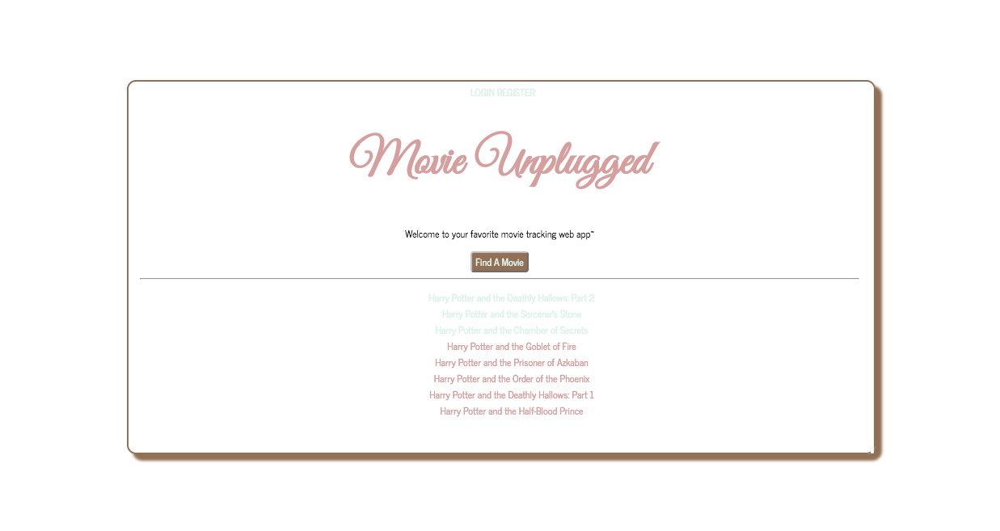
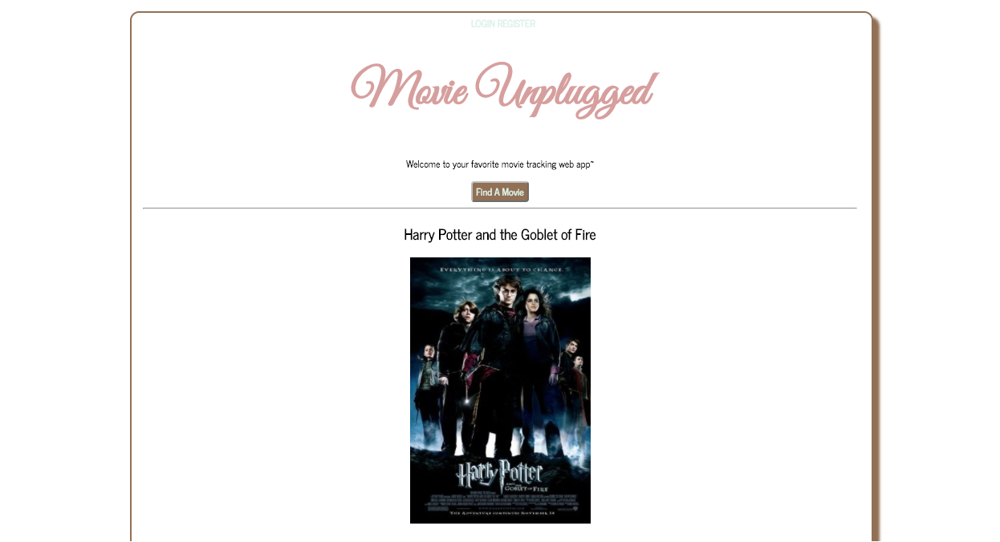
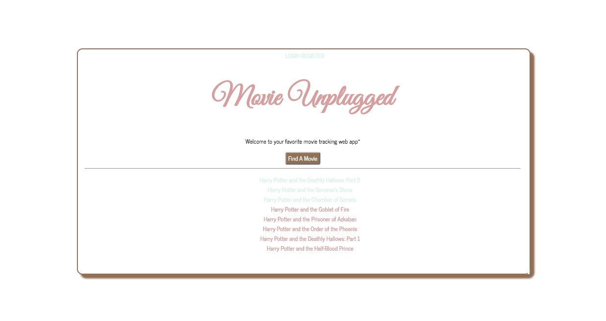
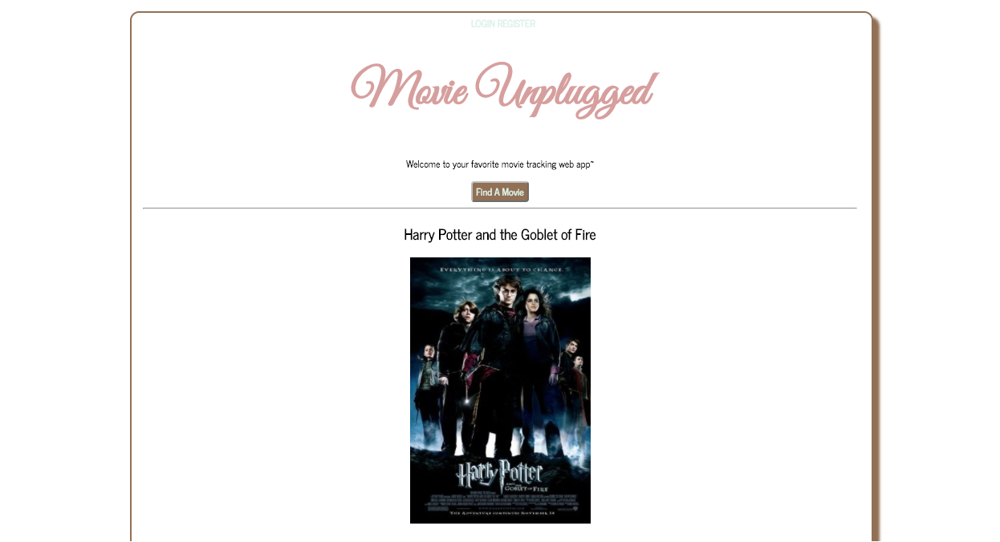
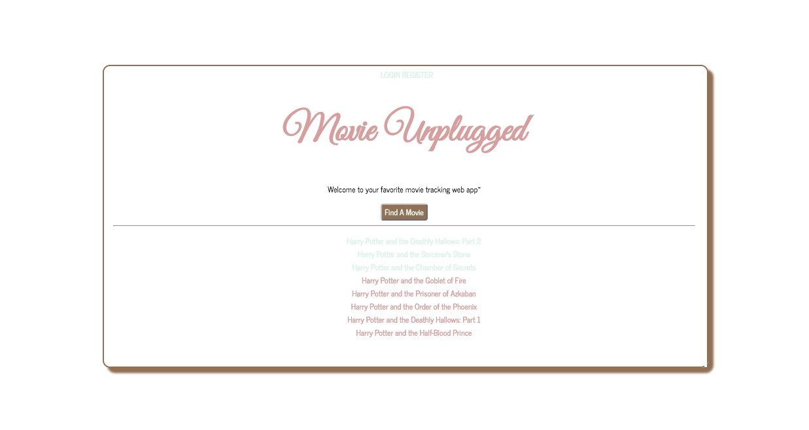
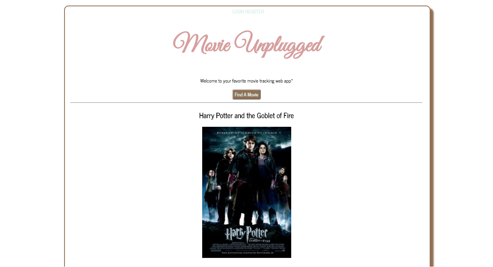

This web app utilized OMDB to make calls and reproduce a list of matching movies + their information!
Web application was created as a solo passion project idea during Dev Bootcamp Phase 2.
Contraints included using a form of API.
Used Agile workflow in order to stay organized throughout process.
Single page web app uses Ajax calls to streamline action
Agile Workflow
Ruby + Sinatra
HTML, CSS3
OMDB API
Javascript, jQuery, Ajax

